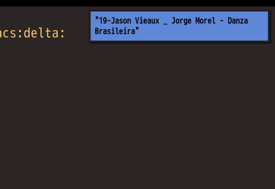

Configure EMMS (Emacs Multi-Media System) for Multimedia Keyboard
Emacs server need be started first.
I use emacsclient to execute emms commands in the emacs server.
Key bindings setup in ~/.i3/config for i3 window manager,
# music player client (mpc, emms ...)
bindsym XF86Search exec --no-startup-id ~/bin/music-player-client show
bindsym XF86Tools exec --no-startup-id ~/bin/music-player-client random
bindsym XF86AudioStop exec --no-startup-id ~/bin/music-player-client toggle
bindsym XF86AudioPause exec --no-startup-id ~/bin/music-player-client toggle
bindsym XF86AudioNext exec --no-startup-id ~/bin/music-player-client next
bindsym XF86AudioPrev exec --no-startup-id ~/bin/music-player-client prev
Content of ~/bin/music-player-client,
#!/bin/bash
# use mpc&mpd or emacsclient&emms to play music
if [ -z "$1" ]; then
echo "Usage: music-player-client pre|next|toggle|random|show"
exit 1
fi
# Please uninstall mpc&mpd if using emms
if command -v mpc &> /dev/null; then
case $1 in
prev )
mpc prev
;;
next )
mpc next
;;
toggle )
mpc toggle
;;
esac
elif command -v emacsclient &> /dev/null; then
case $1 in
prev )
emacsclient --eval '(emms-previous)'
;;
next )
emacsclient --eval '(emms-next)'
;;
toggle )
emacsclient --eval '(emms-pause)'
;;
random )
emacsclient --eval '(progn (emms-shuffle) (emms-next))'
;;
show )
# program like dunst can show the notification
notify-send "$(emacsclient --eval '(file-name-base (emms-show))')"
;;
esac
fi
I usually run M-x emms-play-directory-tree to play music. My emms setup,
(with-eval-after-load 'emms
;; minimum setup is more robust
(emms-minimalistic)
(setq emms-player-list '(emms-player-mplayer
emms-player-vlc)))
Screen shot of running ~/bin/music-player-client show,

Integrate delta into git
Delta is a syntax-highlighting pager for git, diff, and grep output.
Set up is as simple as copying its sample setup.
I wrote a shell script my-pager which can use both less and delta as pager,
#!/bin/bash
# @see https://stackoverflow.com/questions/19408649/pipe-input-into-a-script
if [ -x "$HOME/.cargo/bin/delta" ]; then
cat | $HOME/.cargo/bin/delta "$@"
else
cat | less -F -X
fi
Here is my extra delta setup in ~/.gitconfig (Delta reads settings from ~/.gitconfig),
[core]
pager = ~/bin/my-pager
[interactive]
diffFilter = ~/bin/my-pager --color-only
[merge]
conflictstyle = diff3
[diff]
colorMoved = default
[delta "default"]
file-decoration-style= blue box
hunk-header-decoration-style = purple ol
[delta]
features = default
navigate = true # use n and N to move between diff sections
Screenshot,

Emacs 28.1 on Debian Linux
As a happy Emacs 27 user on Debian Linux, I plan to use both Emacs 28.1 and Emacs 27 and gradually migrate from Emacs 27 to Emacs 28.
So I installed Emacs 28.1 without X Window System Support (emacs-nox) and it only runs in daemon mode.
Here are the steps,
- Compare PKGBUILD of emacs-nox 27 and PKGBUILD of emacs-nativecomp 28 to get the difference of build script (I was more familiar with Arch Linux. You can use Gentoo Linux's website to collect information)
- The only missing third party package is
libgccjit. Runsudo apt install libgccjit-12-devto install it - Download Emacs 28.1 source code, run below command in shell,
cd ~/Downloads/emacs-28.1 && mkdir -p ~/myemacs/28.1 && rm -rf ~/myemacs/28.1/* && ./configure CFLAGS=-no-pie --prefix=~/myemacs/28.1 --without-x --without-sound --with-modules --with-native-compilation --without-compress-install && make && make install
- After installation, run "~/myemacs/28.1/bin/emacs" and Emacs will compile the packages automatically (I watched a few youtube videos until the compilation finished)
- Create "~/.config/systemd/user/emacs.service" with below content ("/home/cb" is my HOME directory),
[Unit]
Description=Emacs text editor
Documentation=info:emacs man:emacs(1) https://gnu.org/software/emacs/
[Service]
Type=forking
ExecStart=/home/cb/myemacs/28.1/bin/emacs -Q --daemon -l "/home/cb/.emacs.d/init.el" --eval "(progn (require 'server) (server-start))"
ExecStop=emacsclient --eval "(kill-emacs)"
Environment=SSH_AUTH_SOCK=%t/keyring/ssh
Restart=on-failure
[Install]
WantedBy=default.target
- Run
systemctl --user restart emacs.servicein shell - Done! Run
emacsclientto enjoy Emacs 28.1.
2.1. disable "idle loader" in server mode
I use "idle loader" in my Emacs distribution. Obviously it need be disabled in server mode.
Here is the code,
(defvar my-disable-idle-timer (daemonp)
"If not nil, Function passed to `my-run-with-idle-timer' is run immediately.")
(defun my-run-with-idle-timer (seconds func)
"After SECONDS, run function FUNC once."
(cond
(my-disable-idle-timer
(funcall func))
(t
(run-with-idle-timer seconds nil func))))
2.2. Shell script to install Emacs
You could Use below script "install-emacs.sh" to install Emacs,
#!/bin/sh
[ -z "$EMACS_VERSION" ] && echo "Usage: EMACS_VERSION=25.1 install-emacs.sh or EMACS_VERSION=snapshot install-emacs.sh" && exit 1
[ -z "$EMACS_URL" ] && EMACS_URL="http://mirror.aarnet.edu.au/pub/gnu/emacs/"
# I've assign 12G memory to /tmp as ramdisk
[ -z "$EMACS_TMP" ] && EMACS_TMP="/tmp"
if [ "$EMACS_VERSION" != "snapshot" ]; then
echo "curl $EMACS_URL/emacs-$EMACS_VERSION.tar.gz"
curl $EMACS_URL/emacs-$EMACS_VERSION.tar.gz | tar xvz -C $EMACS_TMP
fi
# @see http://wiki.gentoo.org/wiki/Project:Emacs/GNU_Emacs_developer_guide
# @see http://packages.gentoo.org/package/app-editors/emacs for info on Gentoo Linux
# --without-gtk and --without-gtk3 is optional
echo "Installing Emacs ..."
if [ "$EMACS_VERSION" = "snapshot" ]; then
cd $HOME/projs/emacs && mkdir -p $HOME/myemacs/snapshot && rm -rf $HOME/myemacs/snapshot/* && ./autogen.sh && ./configure CFLAGS=-no-pie --prefix=$HOME/myemacs/snapshot --without-x --without-dbus --without-sound --with-gnutls=no && make && make install
echo "Emacs snapshot was installed!"
elif [ "$EMACS_VERSION" = "28.1" ]; then
cd $EMACS_TMP/emacs-$EMACS_VERSION && mkdir -p $HOME/myemacs/$EMACS_VERSION && rm -rf $HOME/myemacs/$EMACS_VERSION/* && ./configure CFLAGS=-no-pie --prefix=$HOME/myemacs/$EMACS_VERSION --without-x --without-sound --with-modules --with-native-compilation --without-compress-install && make && make install
else
cd $EMACS_TMP/emacs-$EMACS_VERSION && mkdir -p $HOME/myemacs/$EMACS_VERSION && rm -rf $HOME/myemacs/$EMACS_VERSION/* && ./configure CFLAGS=-no-pie --prefix=$HOME/myemacs/$EMACS_VERSION --without-x --without-sound --with-modules && make && make install
rm -rf $EMACS_TMP/emacs-$EMACS_VERSION
echo "Emacs $EMACS_VERSION was installed!"
fi
Start teamviewer on i3wm
See yveslec's analysis.
So the solution is just one liner in shell.
ssh -X 127.0.0.1 "DISPLAY=:0.0 teamviewer"
Here is my shell script "~/bin/sshx-teamviewer.sh" with a bit optimization,
#!/bin/sh
# Run "cat ~/.ssh/id_rsa.pubkey >> ~/.ssh/authorized_keys" to
# avoid inputting ssh login password
ssh -X -C 127.0.0.1 "DISPLAY=:0.0 teamviewer"
蒜苔炒蛋
要点,
- 蒜苔老的头掐掉, 开水焯一下后放入冷水,从中间撕成两半,切成四公分的段.
- 滚刀切葱段备用
- 炒蛋核桃块大小, 三分盐
- 油热后加葱和少许海鲜酱油.炒几下后加入蒜苔加盐花椒油翻炒
- 加蛋翻炒几下,略勾芡
注: 没有花椒油,所以我在油温较高时和葱段一起加入少许花椒粒,利用油温爆出花椒香味.

麻婆豆腐
视频教程见大师的菜 麻婆豆腐.
要点,
- 豆腐要嫩, 过开水去豆腥味, 加盐提味,一点酱油提色
- 牛肉末炒酥取出
- 加豆瓣酱,豆豉,辣椒面等.不能加姜,会压住其他味.炒到发香.加肉末,加高汤
- 汤最多到豆腐的50%
- 用炒勺的背面推豆腐保持豆腐完整
- 三次勾芡(第一次让味进入豆腐,第二次起到拉力作用,第三次彻底粘合,不要吐水出来)
- 最后用小火甚至微火,多烧一下才入味(要不断推豆腐,否则豆腐沾锅底)
- 起锅前加入蒜苗, 少许花椒粒烤热后磨成粉撒入

Set up vmtouch systemd service
"/etc/default/vmtouch" on Debian Testing,
# Change to yes to enable running vmtouch as a daemon
ENABLE_VMTOUCH=yes
# User and group to run as
VMTOUCH_USER_GROUP=cb:cb
# Whitespace separated list of files and directories for vmtouch to operate on
VMTOUCH_FILES="/home/cb/.emacs.d/lisp /home/cb/.emacs.d/elpa /home/cb/.emacs.d/site-lisp /home/cb/.mozilla/firefox/linux.default/*.sqlite /home/cb/.mozilla/firefox/linux.default/*.json"
# Options to pass to vmtouch itself. See vmtouch(8).
VMTOUCH_OPTIONS="-q -t"
Run sudo systemctl restart vmtouch to restart the service.
"home/cb.emacs.d" is not touched because the package elpy will create a sub-directory "elpy" there. This sub-directory is huge. It contains many python libraries.